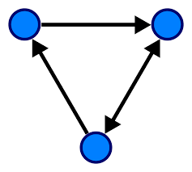
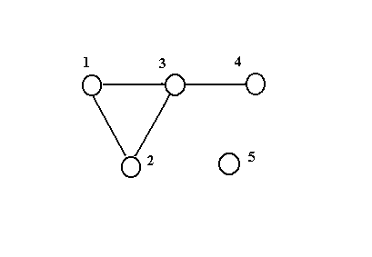

Графи
Граф — це сукупність об'єктів із зв'язками між ними. Об'єкти розглядаються як вершини, або вузли графу, а зв'язки — як дуги, або ребра. Для різних галузей види графів можуть відрізнятися орієнтованістю, обмеженнями на кількість зв'язків і додатковими даними про вершини або ребра.
Ребра графу можуть бути напрямленими або ненапрямленими. Наприклад, якщо вершини будуть представляти людей на вечірці, і існуватиме ребро між двома людьми, якщо вони потиснули руки, тоді ребра цього графу не матимуть напряму, оскільки будь-яка особа A може потиснути руки із особою B лише якщо B також потисне руки із A. На противагу цьому, якщо будь-яке ребро від особи A до особи B означатиме, що особі A подобається B, то ребра матимуть напрям, оскільки таке вподобання не обов'язково буде взаємним. Граф першого типу називається неорієнтованим графом, а ребра в свою чергу — неорієнтованими ребрами, тоді як граф другого типу називається орієнтованим графом і ребра — орієнтованими ребрами або дугами.
Орієнтований граф
Орієнтований граф (коротко орграф) — (мульти)граф, ребрам якого присвоєно напрямок. Орієнтовані ребра називаються також дугами, а в деяких джерелах (Оре) і просто ребрами.
Спрямований (орієнтований) ациклічний граф (англ. directed acyclic graph, DAG) — випадок орієнтованого графа, в якому відсутні орієнтовані цикли, тобто шляхи, що починаються і закінчуються в одній і тій самій вершині. Орієнтований ациклічний граф є узагальненням дерева (точніше, їх об'єднання — лісу).
DAWG (англ. directed acyclic word graph) — компактна форма збереження префіксного дерева, списку слів, оптимізована для з'ясування, чи входить деяке слово в цей список чи ні. Сам список отримати нескладно рекурсивним проходом дерева. З точки зору програми, що провадить обхід чи пошук, орієнтований ациклічний граф нічим не відрізняється від дерева, просто однакові піддерева зберігаються в одиничному екземплярі.
Сам спосіб перетворення очевидний: пошук однакових піддерев і перепідключення посилань, одиничний екземпляр. В дійсності окрім букви в вершинах зберігається прапорець, що вказує, чи є дана буква останньою. Через це для пошуку слів, що не повторюються перетворення в DAWG і назад відбувається без втрат (з точністю до порядку слів).
Неорієнтований граф
Неорієнтований граф - це тип графу, в якому кожне ребро не має напрямку. У неорієнтованому графі може існувати ребро, яке з'єднує два вершини, без визначення, яка вершина є початковою, а яка - кінцевою. Іншими словами, в неорієнтованому графі зв'язки між вершинами є взаємними і можуть бути розглянуті як двосторонні.
Неорієнтовані графи часто використовуються для моделювання ситуацій, де зв'язок між двома об'єктами або вершинами є взаємним і не має конкретного напрямку. Прикладами можуть бути соціальні мережі, де дружба або знайомство між людьми є взаємним, або дорожні мережі, де дороги з'єднують міста в обидва напрямки.
В неорієнтованому графі кожна вершина може мати деяку кількість зв'язків, яку називають ступенем вершини. Ступінь вершини - це кількість ребер, які з'єднують її з іншими вершинами. У неорієнтованому графі ступінь вершини визначається як загальна кількість ребер, що з'єднують її з іншими вершинами.